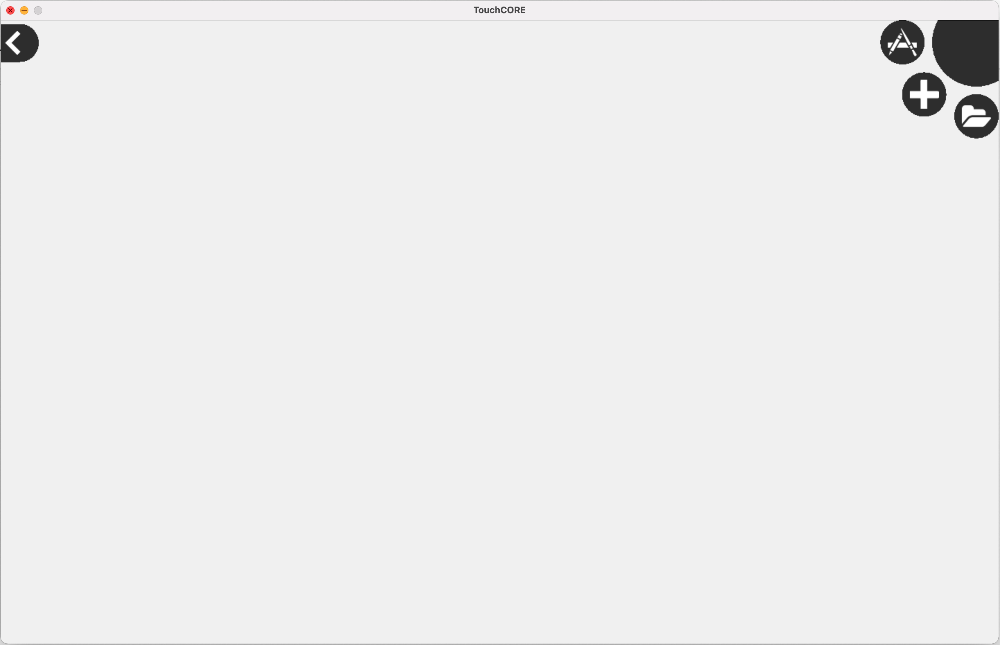
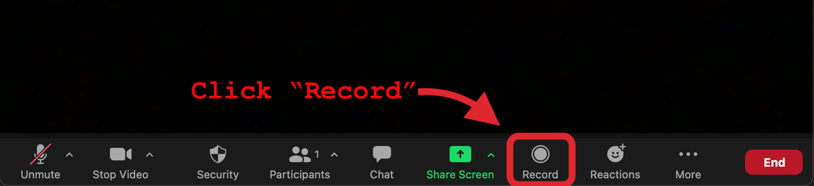

Preliminaries
Software
Let's first check that you have all required software installed on your machine.
If you are not able to install the required software, you can still participate in the study. Please contact the P.I. to schedule access to a lab computer.
Java
You will need Java, version 11.0.5. Unfortunately it has to be exactly this version for compatibility with TouchCORE.
- Verify your java version with
java -version - If the output is not exactly 11.0.5, install it:
- Download the JDK 11.0.5 MacOS package.
- Double click the downloaded
.pkgfile. - Follow the install instructions.
- Download the JDK 11.0.5 Linux package.
- Extract the file:
tar xvf *.tar.gz - Add the contained commands to your path:
- Set the JAVA_HOME and update your PATH in your
~/.bashrcfile:- Extend path:
PATH=$PATH:/wherever/you/extracted/it/jdk-.../bin/ - Set java home:
JAVA_HOME=/wherever/you/extracted/it/jdk-...
- Extend path:
- Open a new terminal or type:
source ~/.bashrc
- Set the JAVA_HOME and update your PATH in your
After installation, verify that 11.0.5 is now the default installed version.
Type again:java -version, check the output.
Maven
You will need the java build tool Maven.
- Test if your system has the
mvncommand. - If missing, install it:
- Unless already installed, get the
brewpackage manager. - Install maven:
brew install maven
- Use the
aptpackage manager to install maven:
sudo apt install maven
- Download the graphical install wizard.
- Double click it and follow the instructions.
TouchCORE
You need a special TouchCORE release, built for this study. Older TouchCORE versions are not compatible.
- Download the study release here: TouchCORE (RESTify Study / JAR)
- Extract the downloaded zip file.
You can not use an older version of TouchCORE. The required features are only contained in the above version.
- Verify you can start it:
java -jar TouchCORE.jar
softwareupdate --install-rosetta (only first time)
java -jar TouchCORE.jar
java -jar TouchCORE.jar
If the TouchCORE window shows black bars, or if mouse clicks are displaced from the cursor location, please set Windows virtual pixel scaling to 100%. Then log out of Windows and log in again:
TouchCORE with black bars:
Windows settings to fix black bars and mouse displacement:
You should now see this:

Should the TouchCORE window does not fit your screen, or should you wish to adjust the window dimensions, edit the file
Settings.txt(in the TouchCORE directory) and adjust the lines:DisplayWidth=...andDisplayHeight=.... Fullscreen mode on M1-Macs is not reliable, do not use it if you have an M1-Mac.
IntelliJ
Any IDE can be used, but we strongly recommend IntelliJ. Also further instructions and guides on this page are exclusively for IntelliJ.
- Download and install IntelliJ.
- The community version is sufficient.
- If desired you can also use the ultimate version (registration with mcgill email required).
Zoom
You'll need zoom, to record your task activity. (*)
Full screen recordings should not reveal personal content. Whenever asked to record, please first close all irrelevant browser tabs and clean your desktop from personal files.
Important: We strongly recommend not to use a multi screen setup. It is too easy to forget about only one screen being captured! All you activity must be reflected in the recordings, this includes you working with the provided material, e.g. these instructions. If you have multiple screens we strongly recommend to either deactivate one screen, or enable the "mirror" option in your operation system (so they show the identical content).
(*) You can use whatever software you want, as long as it captures your entire screen for the full duration of your task activity. We only recommend zoom for REB compliance reasons. E.g. on Mac there is the preinstalled software "Quicktime".
- No worries you can stay offline, Zoom is only required to record your screen to disk.
- Unless already installed, install zoom now.
- Then try to record a short screencast, to test your setup:
- Start a new meeting.
- Click the record button.
 - Start to share your Desktop.

- Wait a few seconds
- End the zoom meeting
- Start a new meeting.
Verify that your Desktop recording to file worked. Watch your test recording now!
Applications
This section describes how to obtain source code and prepared TouchCORE models for the study objects.
Source Code
For the upcoming two tasks you will need prepared source code to work on.
- Prepare a dedicated folder for your tasks, e.g. on your Desktop.
- Clone these three repositories, but do not yet inspect their content:
- The Zoo:
git clone https://github.com/kartoffelquadrat/Zoo.git - The Book Store:
git clone https://github.com/kartoffelquadrat/BookStoreInternals.git - Tic Tac Toe:
git clone https://github.com/kartoffelquadrat/XoxInternals.git
- The Zoo:
- You should now have three new directories in your study folder:
- Finally, for each folder, verify you can build the code as is:
- Open a terminal / command line in the project folder.
- Run:
mvn clean install - Verify there are no error messages printed to screen.
All code you are working with in this study is open source, and you are welcome to share and redistribute it, beyond the context of this study. However, whatever published should always reference and give credit to the original source and authors.
IntelliJ Import Test
Let's verify that you can open and run the test source code with IntelliJ:
- Start IntelliJ.
- Use the "Open" option to get to the selection dialogue:

- Select the cloned project root folder, then click the "Open" button:

- Verify you can start the "Zoo". Open the
DesktopLauncherclass and click the green triangle, left of the code:

- Verify there is sample zoo text output, no error messages.
- Close IntelliJ again.
Prepared Models
Throughout your tasks you will be working with the below TouchCORE model bundle.
- Download the model bundle.
- Extract them all on your disk, e.g. your Desktop.
TouchCORE Import Test
Let's verify that you can open the test model:
- Launch TouchCORE
- Try to open the prepared Zoo model (and only the Zoo model!).
- Select the load icon.

- Navigate to where you extracted the
zoo.zipfile.- Use the Arrow Up triangular icon to orient, if needed.
- Select the
zoo.corefile. - Click the green "Load" button.

- You should see this:

- Close TouchCORE again.
Task Illustration
In both of your tasks you will convert an existing java application to a RESTful service. This activity is also called RESTify or RESTification.
- A REST application is a service that exposes functionality over a a network protocol:
- The service creates the illusion of offering all functionality through CRUD operations on resources.
This is a bit like file system access where you can Create, Read, Update or Delete files.
However, access is not through a file system, but though the HTTP protocol. - A resource is identified by its URL (*Unique Resource Location). It looks e.g. like this:
http://127.0.0.1:8080/zoo/animalshttpspecifies the protocol to reach this resource127.0.0.1:8080sets physical location of the target machine and the port running the REST service.zoo/animalsis the location of a resource, offered by the running REST service.
- A REST interface is always an abstraction of the actual implementation, and should not be confused with RMI (Remote Method Invocation) where existing methods are called as-they-are over network.
- The service creates the illusion of offering all functionality through CRUD operations on resources.
- At the start of each task I will provide you with the tools for this process and illustrate the requests activity on a sample application, the Zoo.
The Zoo Application
The Zoo is a minimal java desktop application that offers some demo functionality, namely:
- Looking up the Zoo's opening hours.
- Looking up all names of Zoo animals.
- Looking up details for a specific animal, identified by name.
- Adding a new animal to the Zoo.
The above functionality is all provided by a singleton class: Zoo.
- For convenience, here is a class diagram of the
Zooclass:

- You can also inspect the DesktopLauncher, to see how to invoke above methods.
- Finally you can also run the provided Zoo implementation as is, to see a demo of above functionality:
- Open a terminal in your cloned Zoo project
- Type:
mvn clean package exec:java
The Zoo REST interface description
The RESTification of an application (e.g. the Zoo) requires an interface description. An interface description tells you:
- The expected arrangement of REST resources, and also their individual locations.
- Which methods (
Get,Put,Post,Delete) are supported per resource. - What happens when a REST resource method was called, and how required parameters are provided.
For example for the Zoo the interface description could look like this:
- Your interface should begin with a top-level resource "zoo", not offering any methods.
- "zoo" should have two subresources, "animals" and "openinghours", both offering a [GET] method.
- A [GET] request to "animals" should return the list of all animal names in the zoo.
- A [GET] request to "openinghours" should return a description of the zoo's opening hours during the week and on weekends.
- The "animals" resource should have a single dynamic placeholder subresource representing a specific animal, identified by name. Name it e.g. "animalname". This dynamic subresource should offer a [Get] and a [Put] method.
- A [GET] request to the dynamic placeholder subresource should provide details on the given animal, identified by the value of the dynamic resource, i.e., the name of the animal (which serves as input parameter).
- A [PUT] request to the dynamic placeholder subresource should allow adding a new animal to the zoo. The name of the new animal is again specified by the value of the dynamic resource, while further details on the animal are passed as request body payload.
Your task will be to formalize the provided interface description, and establish a semantic mapping on existing functionality and parameters.
It's a good practice to have the textual description open throughout your task. For your convenience the Zoo description also is available as separate file (as will be the case for the descriptions you'll work with throughout your tasks).
There are two ways to achieve this. In each task...
- ... I'll first walk you through the required steps (using the Zoo).
- ... then I'll ask you to convert a different application the same way.
Heads up!
If anything in this preliminary section did not work as expected, do not continue!
- Do not proceed to the tasks! Instead send an email to the principal investigator.
- We will arrange a direct zoom call to debug your setup.
- If everything fails we will provide you with a prepared machine.
If everything worked as expected you may now proceed to your first task.